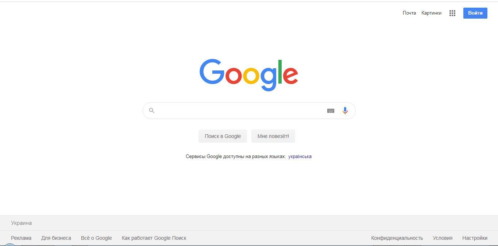
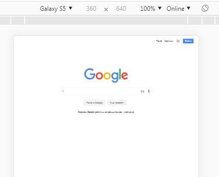
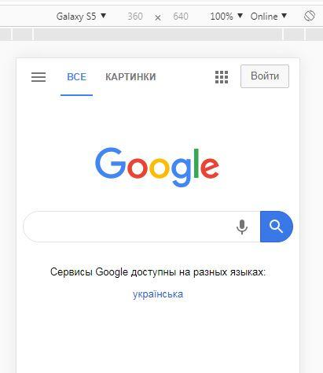
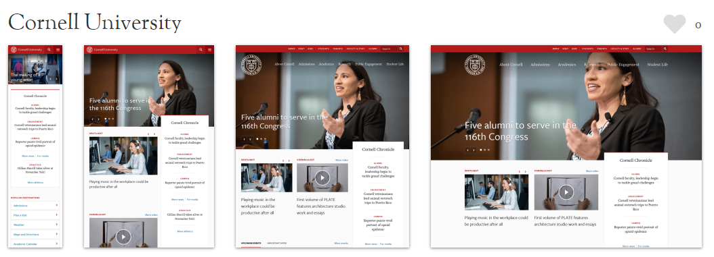
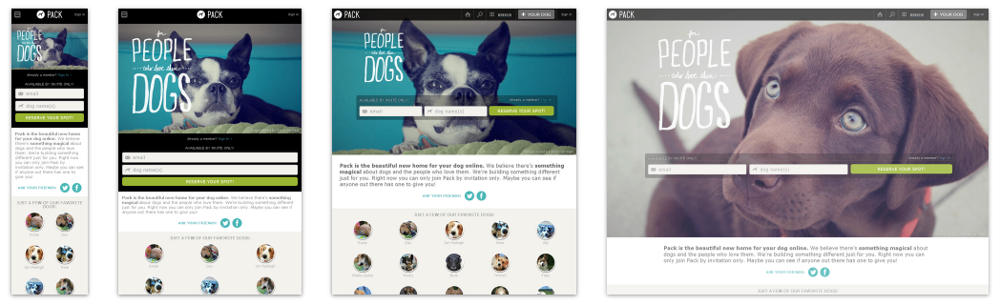

В сучасному світі існує велика кількість пристроїв, за допомогою яких ми виходимо в Інтернет: комп'ютери,
планшети, смартфони, телевізори та навіть годинники. І користувачу буде незручно дивитись вебсторінку, якщо
вона на смартфоні відкриється в такому ж вигляді, що й на ноутбуці: елементи інтерфейсу будуть замалими або
з'явиться горизонтальне прокручування. Користувач швидше за все вийде з такого сайту, якщо не застосувати до
нього адаптивний дизайн.
Давайте розглянемо приклад як би відображався відомий пошуковик Google, якби він не мав адаптивного
дизайну:

На знимку екрану всі елементи зручно розташовані для використання та займають всю видиму частину вікна
браузера на ноутбуці.

На другому знимку екрану видно, що елементи сторінки стали дуже малими і незручними ні для перегляду, ні для
використання.

На третьому знимку видно, як адаптивний дизайн перебудував сторінку пошуковика: всі елементи знову зручно
розташовані та їх розміри відповідають пристрою.
Адаптивний дизайн — це дизайн, який дозволяє правильно відображати вебсторінки на різних пристроях та плавно
змінює елементи сторінки при зміненні розміру вікна браузера.
Не так давно було прийнято створювати окрему «мобільну» версію вебсайту, яка насправді була копією контенту
з іншим відображенням елементів, що призводило до проблем в просуванні таких сайтів. З приходом визначення
адаптивного дизайну окремі версії сайту для різних пристроїв створювати непотрібно, тому що при одному й
тому самому контенті ми отримуємо зручне розташування елементів на мобільних пристроях.
Переваги адаптивного дизайну:
Відсутня необхідність створювати окрему версію вебсайту для конкретного пристрою.
Універсальне представлення вебсторінок для різних пристроїв.
Всі сторінки доступні за однією url адресою, що позбавляє від проблем у просуванні сайту.
Зручність використання інтерфейсу вебсторінок незалежно від гаджету.
Недоліки адаптивного дизайну:
Повільне завантаження сайту через його велику вагу. Незалежно від пристрою завантажується повна версія
сайту.
Складніша верстка вебсторінок, через те що потрібно враховувати тонкощі відображення на всіх видах
пристроїв.
Неможливість «вимкнути» мобільне відображення на пристрої з маленькою роздільною здатністю, необхідно
відкривати сторінку на іншому пристрої з більшою роздільною здатністю.
Складніший та довший процес тестування сайту.
Але, навіть враховуючи недоліки, адаптивний дизайн є необхідним, тому що кількість мобільних користувачів і
різноманітність гаджетів зростає щодня.
Приципи адаптивного дизайну
Використання відносних одиниць виміру. Для того, щоб елементи плавно змінювались в залежності від ширини
вікна браузера, необхідно використовувати відносні одиниці виміру для вказування ширини, висоти,
внутрішніх і зовнішніх відступів, розмірів шрифту. До відносних одиниць належать: %, em, ex, vh, vw,
vmin.
Застосування межових значень для ширини контейнера. На маленькому пристрої контент на ширину всього
вікна виглядає гарно, а таке ж відображення контенту на широкоформатному моніторі буде викликати
дискомфорт під час перегляду. Тому рекомендовано використовувати межові значення для ширини/висоти в
абсолютних величинах, а саме в пікселях. Для цього використовуються властивості: min-width/min-height і
max-width/max-height.
Використання структури у вигляді сітки. В CSS3 існують різні інструменти, що дозволяють будувати гнучку
структуру для розташування елементів. Такими інструментами є модуль Flexbox і сітка Grid Layout.
Використання медіа-запитівдля перебудовування відображення елементів сторінки. Для того щоб сторінки не
просто плавно стискали контент в залежності від ширини браузера, а перебудовували зміст під гаджет для
зручного перегляду, необхідно прописувати контрольні точки. Контрольні точки — це фізичний параметр
пристрою, за яким визначається поточне відображення. Встановлюються контрольні точки за допомогою
медіа-запитів.
Починати верстку з мобільного відображення та поступово просуватись до широкоформатного або навпаки.
Прийнято починати верстку адаптивної вебсторінки, починаючи з маленьких пристроїв, через те що вони
містять менше елементів і загалом просте й лаконічне відображення контенту, поступово переходячи до
більших розмірів екрана. Та навпаки, можна рухатись від широкоформатного пристрою до мобільного
представлення.
Використання системних шрифтів. Звичайно, ви будете використовувати в дизайні різні шрифти, які
представлені в макеті. Також варто пам'ятати, що шрифт, завантажений з ресурсу в інтернеті уповільнює
його завантаження. Системні шрифти завантажуються миттєво, чим істотно прискорюють завантаження
вебсторінки.
Приховання або заміна елементів на різних пристроях. На мобільних пристроях часто приховують елементи,
що не несуть інформативності (наприклад, банер з рекламою стороннього ресурсу), або приховують їх за
межі екрана, щоб можна було розгорнути їх в будь-який момент (наприклад, фільтри товару).
Адаптація графічного та відео контенту. Для того, щоб сторінки відвантажувались швидше, необхідно
використовувати зображення, адаптивні під поточне відображення. Наприклад, фонові зображення меншого
розміру для мобільних пристроїв. В тих випадках, коли це можливо, використовувати векторний формат
зображень замість растрового.


Елементи інтерфейсу перебудовуються під пристрій для комфортнішого використання, також відвантажуються різні
зображення для швидшого завантаження сайту.
Метатег viewport
Viewport — це видима область вікна браузера, в яку останній вписує вебсторінку. Кожен браузер визначає
ширину viewport по своєму. В середньому, ширина десь біля 1000 пікселів, тому що вважається, що вебсторінки
призначені для десктопних моніторів.
Процес відображення сторінки складається з наступних етапів: браузер отримує сторінку з серверу, задає їй
розміри своєї ширини viewport, а потім пропорційно стискає сторінку до розмірів відображеного пристрою.
Для того, щоб браузер не масштабував сторінку, прийнявши її ширину за ширину viewport встановлену за
замовчуванням в його налаштуваннях, необхідно використовувати метатег viewport.
Метатеги призначені для вказування інформації для браузерів і пошукових систем. Метатег viewport вказує
браузеру в якому масштабі необхідно відображати видиму частину сторінки на різних пристроях.
В таблиці представлено перелік параметрів і їх значень, які може приймати метатег viewport.
Параметри viewport
Параметр
Значення
Опис
width
Ціле число в пікселях або значення device-width, яке дорівнює ширині екрану в пікселях CSS при
масштабі 100%.
Задає ширину області viewport.
Ширина в пікселях CSS — це не фізична роздільна здатність екрану, а величина що регламентує розмір
пікселя. Необхідна для того, щоб при більшій щільності пікселів, елементи виглядали однаково.
height
Ціле число в пікселях або значення device-height, яке дорівнює висоті екрану в пікселях CSS при
масштабі 100%.
Задає висоту області viewport
initial-scale
Дійсне число від 0.1 та вище
Задає коефіцієнт масштабування початкового розміру viewport. (1.0 — відсутність масштабування)
Значення, вказані в атрибуті content, є значеннями за замовчуванням. Їх потрібно змінювати, якщо ваш сайт
повинен мати, наприклад, мінімальну ширину не менше за 450 пікселів. Тоді значення метатега
буде фактично задавати цю мінімальну ширину для viewport. Якщо екран пристрою буде шириною більше ніж 450
пікселів, то браузер буде розширювати область перегляду, а не зменшувати її.
Другий приклад використовують тоді, коли налаштування масштабу повинні залишатись незмінними при виключені
орієнтації:
В специфікації CSS3 визначення тегу <meta name="viewport"> є ненормованим, тобто на цей момент для
цього тегу немає встановленого стандарту.
Медіа-запити
Медіа-запит по суті є умовною конструкцією, яка запитує у пристрою, що відображає вебсторінку, його
характеристики і виконує набір стильових правил, якщо отримані характеристики пристрою відповідають заданим
в умові поточного медіа-запиту.
Медіа-запити використовуються в адаптивному дизайні в тих випадках, коли необхідно застосувати різні
css-стилі для відображення на різних пристроях з урахуванням їх характеристик. Наприклад, нижче на
зображенні видно, як перебудовується сторінка від пристрою до пристрою. Зверніть увагу на елемент, що
виконує пошук по сайту. На десктопному відображенні він знаходиться в верхньому правому кутку сторінки,
залишаючись на тому ж місці при виведенні результатів пошуку. В мобільній версії цей елемент зміщується вниз
сторінки, тому що це найзручніше місце для швидкого вводу шуканої інформації.
Медіа-запит складається з типу пристрою (необов'язковий параметр) і технічних характеристик даного пристрою.
Його можна застосувати наступними способами:
За допомогою тегу link:
<link rel="stylesheet" media="screen and (min-width:900px)" href="width_900.css">
За допомогою правила @import:
@import url(width_900.css) screen and (min-width:900px);
За допомогою правила @media, вказаного всередині тегу style або в стильовому файлі:
@media screen and (min-width:900px) {
/* стилі для вказаного типу пристрою і його характеристик */
}
Медіавирази CSS та їх властивості
Найменування
Опис
aspect-ratio
Відношення ширини до висоти. Наприклад: (aspect-ratio: 12/5).
color
Кількість біт на компонент кольору.
color-gamut
Перевіряє кольорову гаму, що підтримується пристроєм: rgb(color-gamut:srgb), р3(color-gamut:р3),
BT.2020(color-gamut:rec2020).
color-index
Перевіряє чи використовує пристрій таблицю відповідності кольорів. Значення: ціле число.
grid
Перевіряє чи пристрій виводу є сітковим чи растровим. Якщо пристрій виводу представляє сітку
(наприклад, термінал або дисплей телефону з одним фіксованим шрифтом), то значення буде
дорівнювати 1. В іншому випадку буде 0.
height
Висота області видимості. Задається в абсолютних і відносних одиницях виміру.
monochrome
Кількість біт на піксель монохромного пристрою. Задається цілим числом.
orientation
Орієнтація пристрою: портретна (orientation: portrait) або альбомна (orientation: landscape).
overflow-block
Описує поведінку пристрою, коли йде переповнення контентом по вертикальній осі в режимі
горизонтального запису і по горизонтальній осі при вертикальному записі. Значення: немає
(overflow-block: none), скролл (overflow-block: scroll), з завантаженням (overflow-block:
optional-paged), посторінково (overflow-block: paged).
overflow-inline
Описує поведінку пристрою, коли йде переповнення контентом по горизонтальній осі в режимі
горизонтального запису і по вертикальній осі при вертикальному записі. Значення: немає
(overflow-inline: none), скролл (overflow-inline: scroll).
resolution
Роздільна здатність екрана — кількість пікселів на дюйм (dpi) або сантиметр (dpcm).
scan
Перевіряє процес рендерінгу пристроїв: черезрядковий (scan: interlace) і прогресуючий (scan:
progressive).
update
Перевіряє можливість оновлювати зміст після його візуалізації (наприклад, анімацію css): ні
(update: none), повільно (update: slow) і швидко (update: fast).
width
Ширина області видимості. Задається в абсолютних і відносних одиницях виміру.
Медіа-запит може мати в складі комплексну перевірку характеристик пристрою. Комбінований медіа-запит
створюється
за допомогою логічних операторів:
and — об'єднує декілька медіа-функцій в один медіа-запит. Запит виконується тільки в тому разі, якщо всі
медіа-функції відповідають характеристикам пристрою. Наприклад:
@media (min-width:320px) and (max-width:480px){}
Цей запит виконається лише тоді, якщо ширина екрана пристрою знаходиться в діапазоні від 320 до 480
пікселів.
кома — поєднує декілька медіа-запитів в одне правило. Кожен запит оброблюється окремо від інших, таким
чином
стилі застосовуються, якщо хоча б один запит відповідає характеристикам пристрою. Наприклад:
@media screen and (aspect-ratio: 16/9), screen and (aspect-ratio: 16/10){}
Цей запит виконається для моніторів, у яких пропорційне відношення ширини до висоти дорівнюватиме 16/9
або
16/10.
not — використовується для інвертування медіа-запиту. Наприклад:
@media not (color){}
Цей запит виконається для пристроїв, які не підтримують кольоровість.
only — використовується для застосування стилю лише в тому разі якщо відповідає всьому запитові.
Наприклад,
приховує стилі для старих браузерів.
Приклади формування медіа-запитів з урахуванням типу та характеристики пристрою:
ширина/высота — це найпопулярніші варіанти медіа-запитів, які зчитують ширину або висоту пристрою:
Пристрій та параметри
Запит
Смартфони з шириною екрана в діапазоні від 320 до 480 пікселів
@media only screen and (min-width:320px) and (max-width:480px) { /* стилі */ }
Смартфони з максимальною висотою екрана, що дорівнює 600 пікселів
@media only screen and (max-height:600px) {/* стилі */ }
орієнтація (альбомна та портретна) — відбувається перевірка орієнтації пристрою, якщо вона існує та
увімкнена:
Пристрій та параметри
Запит
Смартфони з альбомною орієнтацією
@media screen and (orientation: landscape) { /* стилі */ }
Попередній перегляд на принтері з портретною орієнтацією
@media print and (orientation: portrait) {/* стилі */ }
пропорції — перевіряє пропорції екрана монітора, а саме відношення ширини пристрою до його висоти:
Пристрій та параметри
Запит
Широкоформатні монітори з пропорційним відношенням ширини до висоти дорівнюючим 16/9
@media screen and (aspect-ratio: 16/9){ /* стилі*/ }
Квадратні монітори з пропорційним відношенням ширини до висоти дорівнюючим 1/1
@media screen and (aspect-ratio: 1/1){ /* стилі*/ }
розширення — перевіряє розширення пристрою — кількість пікселів на дюйм або сантиметр:
Пристрій та параметри
Запит
Пристрої з розширенням 150dpi (кількість пікселей на дюйм)
@media (max-resolution: 150dpi){ /* стилі*/ }
комплексні медіа-запити використовуються в тих випадках,коли потрібно перевірити декілька параметрів або
застосувати однакові стилі до різних пристроїв і їх технічним характеристикам:
Пристрій та параметри
Запит
Пристрій має мінімальну висоту 680 пікселів або є екранним пристроєм в портретному режимі
@media (min-height: 680px), screen and (orientation: portrait){ /* стилі*/ }